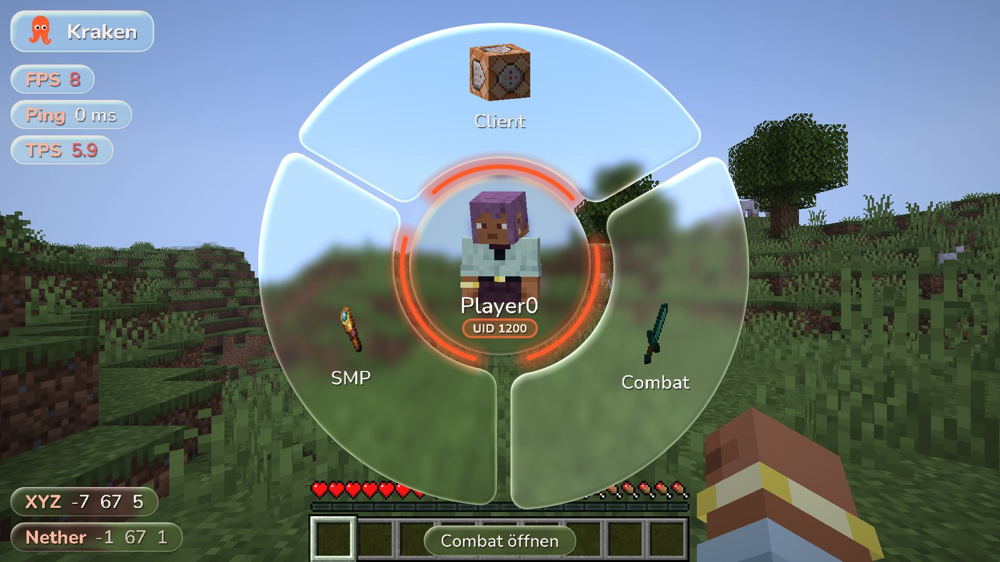

Radial-Menü
Rechts-Shift öffnet das Rad: Kategorien, Module und alle Einstellungen direkt im Rad – mit rotierenden 3D-Items und deinem 3D-Kopf, der der Maus folgt.
Fabric-Client für Minecraft 26.3 – mit einem Radial-Menü statt Click-GUI, echten 3D-Icons, Glas-Design und frei anordnbarem HUD.

Rechts-Shift öffnet das Rad: Kategorien, Module und alle Einstellungen direkt im Rad – mit rotierenden 3D-Items und deinem 3D-Kopf, der der Maus folgt.
TriggerBot, Aimbot mit Vorhersage, SilentAim, SilentKillAura mit unsichtbarer Server-Rotation und eine aggressive BlatantKillAura.
XRay mit Fullbright und der BaseFinder: Amethyst-Wachstum, Sound-Blöcke, Lager, Spieler-Blöcke, Portale und mehr – jeder Hinweis einzeln schaltbar.
Logo, Modulliste, Koordinaten, FPS, Ping, TPS, Speed, Richtung, Uhrzeit und Benachrichtigungen – per Drag & Drop anordnen, mit Einrasten an Kanten.
Den Fabric-Installer starten und Minecraft 26.3 auswählen.
Die Fabric API für 26.3 herunterladen.
Oben auf Download klicken – du bekommst immer den neuesten Build.
Beide .jar-Dateien nach .minecraft/mods kopieren, mit dem Fabric-Profil starten und Rechts-Shift drücken.
Benötigt Java 25 (bringt der Minecraft-Launcher mit). XRay ist nicht mit Sodium kompatibel.
Alle Versionen sind Alpha-Builds aus der laufenden Entwicklung – jeder Push erzeugt automatisch einen neuen Build.